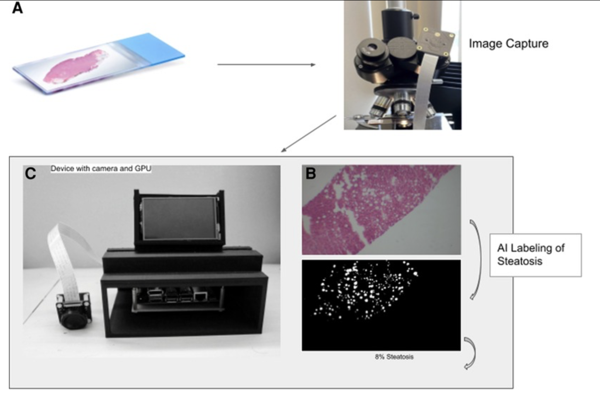

Stanford EE + CS · Previously at Apple
From types to tensors.
From code to hardware.
I’m Taylor. I build across systems, machine learning, and hardware. Here are three projects to start a conversation about how I think, build, and debug.
Explore selected work ↓
Three projects, in depth
01 — 03
01 / ML systems · Stanford CS231n
Fail Fast,
Run Faster.
Shape-safe deep learning in Rust on Apple Silicon.
- The problem
- Tensor shape errors can interrupt model development and training.
- The approach
- Encode dimensions in Rust’s types and separate shape checking from backend execution.
- The walkthrough
- Library architecture, a compiler-rejected shape mismatch, and the path from a simple matmul to acceleration.
Rust / const generics / Metal
01 / Architecture

02 / Compilers · Stanford CS143
A COOL compiler.
From source text to executable MIPS.
- The problem
- Translate an object-oriented language while preserving its types and runtime behavior.
- The approach
- Build lexical analysis, parsing, semantic analysis, code generation, and optimization passes.
- The walkthrough
- Step through interactive compiler demos to see how each stage transforms the program.
C++ / MIPS / type systems
02 / Compilation pipeline
- 01 Source → tokens
- 02 Tokens → syntax tree
- 03 Types & semantics
- 04 MIPS code generation
- 05 Optimization passes
03 / Clinical computer vision
ML beyond
the notebook.
An automated liver tissue analysis pipeline.
- The problem
- Turn liver biopsy imagery into quantitative tissue analysis.
- The approach
- Combine tiled U-Net segmentation with on-device steatosis scoring on a Jetson Nano.
- The walkthrough
- Image processing, model deployment, and the practical constraints of an edge device.
Python / TensorFlow / OpenCV / Jetson Nano
03 / Tissue analysis
